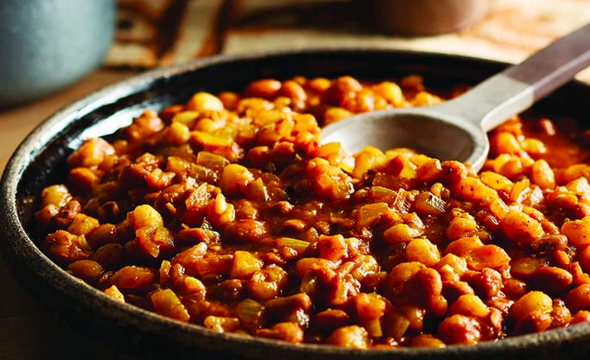

Amahle's Page
I am Amahle this is my first website project. I enjoy being here it is my first time being here i love this place because i am learning how to use computer ,learning how to use website i am so relived am not scared anymore.Being here feels like at school but i love to learn and write.I am 13 years old,i live at Khayelitsha Harare 37375 jikeleza close.I love to watch comedy movies,play tennis because it gives me strength.When am sad i go plqy sport
Favorite Food
chicken and rice

Ingredients
- Preheat the broiler. Heat 1 tablespoon of the oil in a large skillet over medium-high heat. Toss the chicken with the paprika, 1 teaspoon salt and a few grinds of pepper in a large bowl. Place the chicken skin-side down in the skillet and cook undisturbed until the skin is golden but not too dark, 4 to 5 minutes. Remove the chicken to a plate using a metal spatula and add the remaining 1 tablespoon oil to the skillet.
- Add the carrots, celery and shallots to the skillet and cook, stirring occasionally, until softened but not yet turning golden, 4 to 5 minutes. Stir in the garlic, thyme, oregano, lemon zest, lemon juice, 1/2 teaspoon salt and a few grinds of pepper and cook just until you begin to smell the garlic, about 1 minute. Stir in the rice and cook undisturbed until lightly toasted, about 2 minutes. Pour in the broth, add 1/2 teaspoon salt and stir to combine, then add the chicken thighs back to the pan, skin-side up. Bring the liquid to a boil then cover, reduce the heat to a simmer and cook until the rice is tender and the chicken is cooked through, 15 to 20 minutes.
- Remove the lid from the pan and broil until the chicken skin is crispy and golden, 2 to 3 minutes. Sprinkle with the chives.
macaron and sausage

Ingredients
samp
Ingredients
Rice, what what, what what.